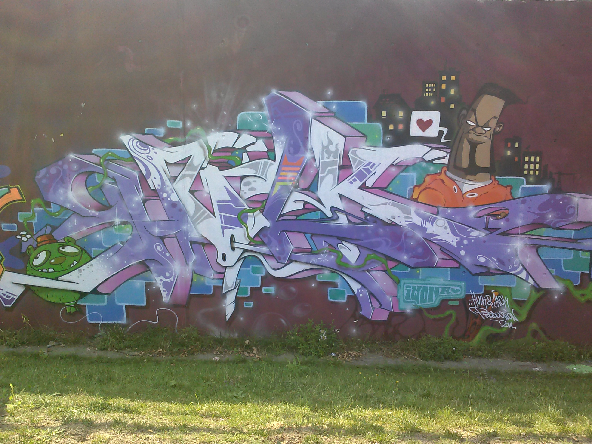
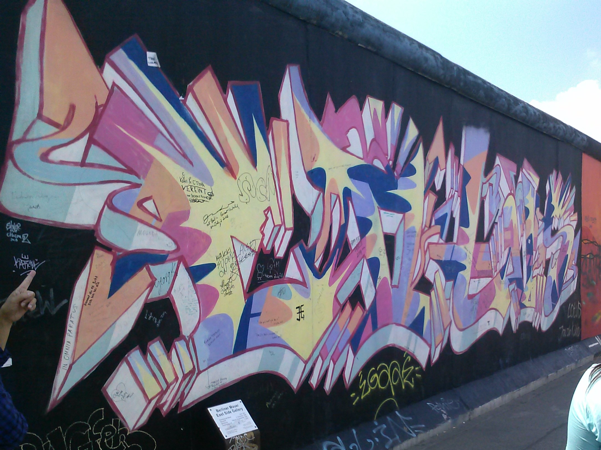
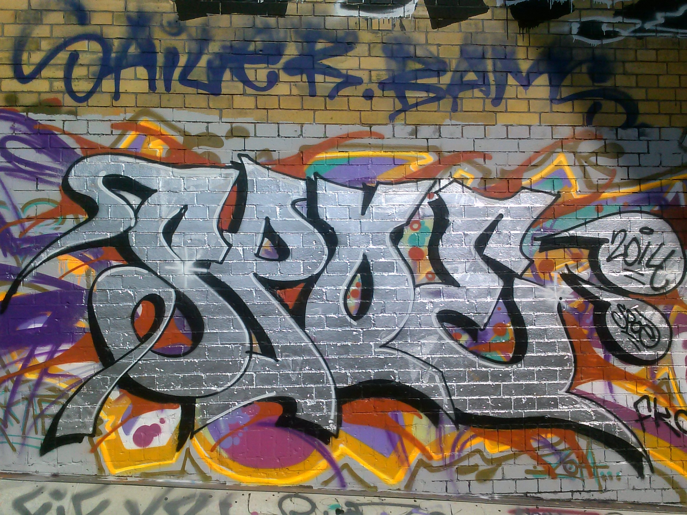
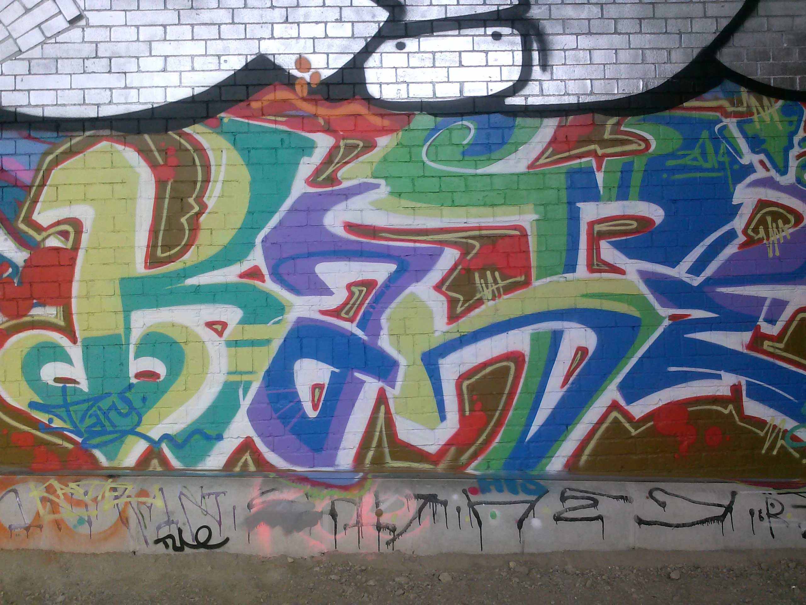
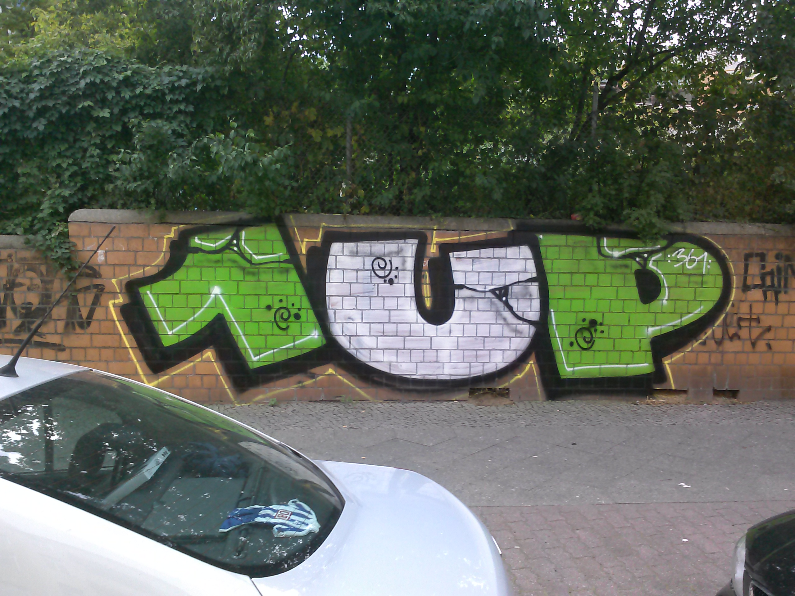
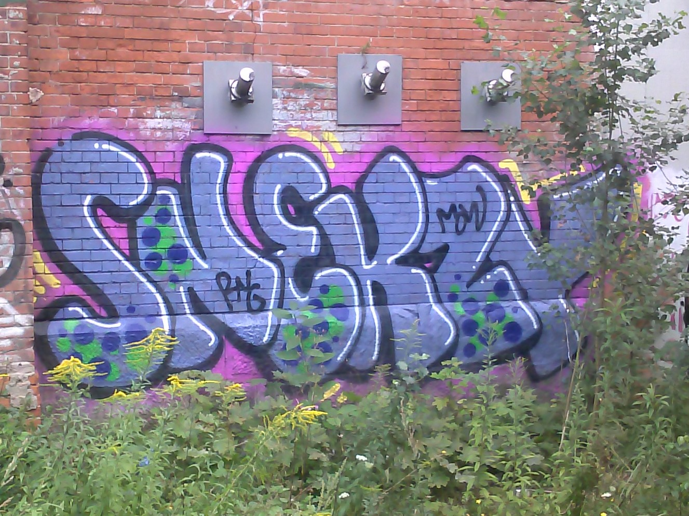

 Graffiti hasn't always been considered an art form. Many still don't consider it to be art at all. But as the graffiti movement grows, so does the acceptance of graffiti in general. Graffiti is now known as part of the Urban Street Art movement. When looking at what graffiti started out as, and what it is today, it is astonishing to see how much it has changed.
Graffiti started out as tagging a wall or subway car, to a full blown art form. There is special paint to use, companies designed around graffiti specifically, to even art shows that show strictly graffiti. Graffiti has turned into a huge industry and the art behind it keeps pushing the movement farther and farther forward. A lot of graffiti artist get commissioned to do special murals for buildings. Graffiti artists, getting paid for their work.
 In the United States, graffiti started to emerge in the 1950s, but started to gain traction in the 1960s. In the 1960s, graffiti and hip hop went hand in hand. It started with tagging. Tagging showed what crew you represenetd and who you hung out with. This took place in the New York subways in the 1970s. Tagging quickly evolved from simple hand styles on subway trains to elaborate paintings on the city walls.
 But how does hip hop and graffiti connect? Well, let me tell you. In the 1970s hip hop artist would get their name and the name of their crew out in the the peoples eye by their tags and large scale paintings. It was a form of self promotion. A lot of hip hop artist got their name out this way including Afrika Bambaataa's Black Spades.
 Graffiti at it's heart is Vandalism. In most cases, graffiti is an act of vandalism. It may look nice to some, but not to all. And a lot of money goes into painting over graffiti. To a majority of people graffiti is viewed as distructive and an eyesore.
 Many people look at the act of graffiti as an adolescent display of entitlement. And whether particular viewers find any given piece of graffiti artistically compelling is irrelevant. Graffiti’s most salient characteristic is that it is a crime. And a lot of people think that there is nothing progressive about graffiti. It is a crime, and that's it.
 The cost of cleaning up graffiti is rather high as well. Depending on where you live, and how frequent graffiti is impacts the yearly cost to clean it up. San Jose California spent an estimated 2 million dollars in 2006 to fight graffiti, and Pittsburgh, PA spent 350k. As you can see, graffiti can be a real nuisance to the city and tax payers.